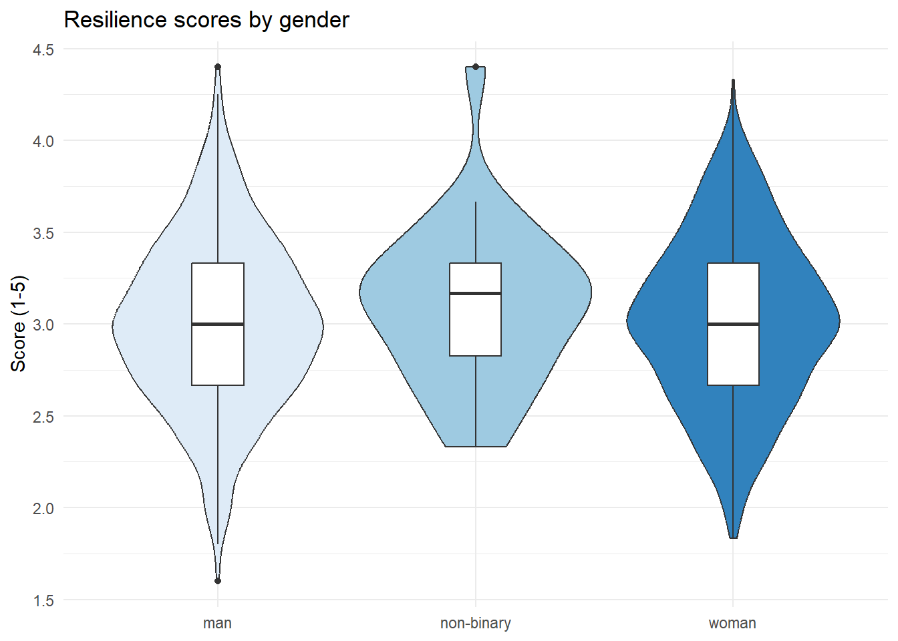
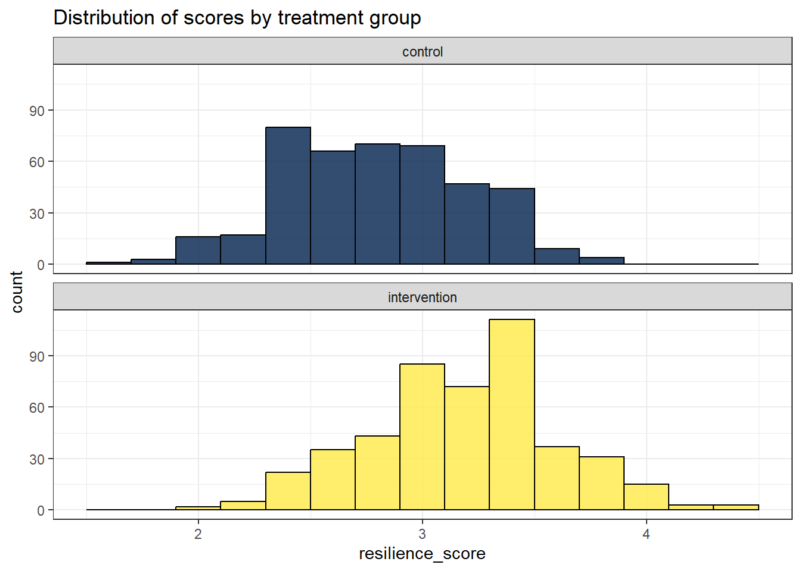
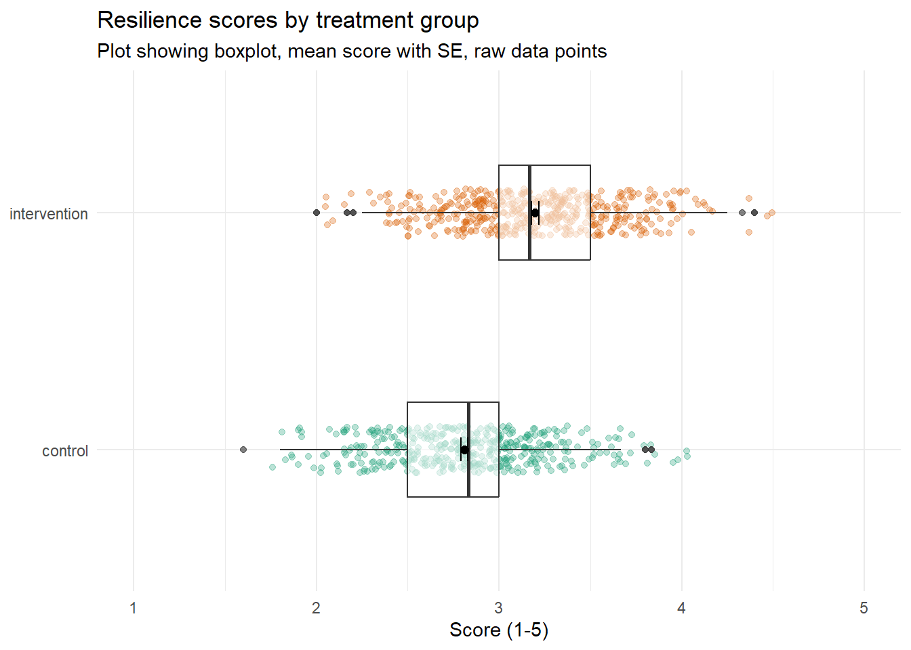

11 Resilience 1
11.1 Intended Learning Outcomes
By the end of this chapter you should be able to:
- Explain what resilience is
- Convert variables to different data types using
as.factor()andas.character() - Begin to problem solve how to reshape data to long-form
11.2 Activity 1: Resilience
For the next set of chapters we’re going to use data from a measurement of resilience.
- First, take part in this online version of the Brief Resilience Coping Scale by Sinclair and Wallston (2004).
- Second, read the Wikipedia entry on resilience. It’s quite long so you don’t have to read the entire thing (although feel free if you’re interested), the main sections to focus on are Overview, Process, and Developing and Sustaining Resilience.
- Finally, answer the following questions. Please note that your responses will not save in the browser - if you want to save them, make a note of them somewhere.
Which of these is a strategy suggested to enhance resilience?
Psychological resilience is mainly characterized as a:
Resilient individuals do not experience any increase in stress in response to stressors.
Social support systems are considered external factors influencing a person’s level of resilience.
The presence of stress in life is necessary for the practice and development of resilience.
Cognitive-behavioral techniques are suggested for enhancing resilience because they involve actively changing thought patterns and behaviors to foster a more adaptive response to stress.
Psychological resilience is termed a “Process” because it is seen as a dynamic set of interactions between a person and their environment, which can be developed over time.
The statement is “False” because resilient individuals do experience stress; however, they generally manage to return to baseline stress levels more effectively than less resilient individuals.
“True”, social support systems are external factors that contribute to a person’s resilience by providing emotional and practical resources during times of stress.
“True”, the presence of stress provides individuals with opportunities to practice resilience, although the optimal level of stress for this purpose varies among individuals.
11.3 Activity 2: New project
- Open RStudio and make a new project for the Resilience chapters (this week and next week).
- Create a new Markdown document named “Resilience 1”. Delete the default text and then create a new code chunk.
- Your environment should be clear but if there are objects in it, remove them by pressing the brush icon.
11.4 Activity 3: Data files
Once you’ve done all this, it’s time to download the files we need and then unzip them and put them in the right place.
- First, download the Resilience data zip file to your computer and make sure you know which folder you saved it in.
- Then unzip the files and move them into the right folder.
The data we’re working with is simulated data for an experiment where people have completed a resilience questionnaire and also take part in a treatment condition. They either are in the control group where they are asked to do a colouring book every night, or they’re in an intervention group where they’re asked to complete CBT exercises every night. There are 890 participants in total.
The zip file contains three files:
demographic_datacontains the participant ID, age, gender, and treatment condition (1 = control, 2 = intervention).questionnaire_datacontains the participant ID and then their responses to each question on the Brief Resilience Scale.scoring.csvcontains the scoring information for the questionnaire as some of the items are reverse-scored (also known as backward scoring).
11.5 Activity 4: Loading the data
In code chunk 1, write and run the code that:
- Loads the
tidyversepackage. - Uses
read_csv()to loaddemographic_data.csvinto an object nameddemo_data. - Loads
questionnaire_data.csvinto an object namedq_data. - Loads
scoring.csvinto an object namedscoring
Is demographic_data in wide-form or long-form? Is questionnaire_data in wide-form or long-form?
They’re both in wide-form at the moment because each dataset has a single row for each participant, with multiple columns for each bit of information.
11.6 Activity 5: Check the data
As always, your first step should be to check the data. Run summary() and str() on both demo_data and q_data and answer the following questions:
- What type of data is
genderstored as? - What type of data is
treatmentstored as? - What type of data is
participant_IDstored as? - How many missing data points does
bounce_back_quicklyhave (these are coded asNA)? - How many missing data points does
agehave?
11.7 Activity 6: Convert data types
A useful next step with data processing is to fix any data types as it can prevent problems further down the line. We’ve done this before but we’ll extend it a little now and show you other functions to convert.
First, let’s do a conversion you’ve already done - we’ll use factor() to convert treatment to a factor and update the labels. We’ll store this in a new object named demo_cleaned but we will just overwrite the existing variable treatment rather than creating a new one.
If you now run summary(demo_cleaned), you’ll see that treatment is now coded as a factor and it helpfully tells us how many participants are in each group.
gender is also a categorical variable that we might want to include in our analysis but it requires a slightly different, and simpler, approach because the values are already stored as text, R just doesn’t yet know that these represent discrete categories. Instead of using factor() and updating the levels and labels, we can just use as.factor(), which just overwrites whatever is in that column as a factor.
There are also similar functions for other data types. Although it won’t really cause us any problems, we can convert participant_ID. It’s currently stored as a numeric variable (because the IDs are just numbers) but really it’s a character variable (it’s just the same as a name).
- Now create an object named
q_cleanedthat cleans theq_dataobject by convertingparticipant_IDto a character variable.
11.8 Activity 7: Join and reshape the data
We can now do our first join and join together the demographic and questionnaire data so we’ve got a single wide-form dataset. In this code we create an object named dat_wide that joins together demo_cleaned and q_cleaned.
Once we’ve done that, we need to reshape it into long-form using pivot_longer(). See if you can remember how to do this using just the hints. Reshaping data is probably the hardest conceptual leap you’ve taken since first learning to code and it only gets easier if you try and think through the problem yourself.
- Name the object you’re going to create
dat_long - Start with the dataset
dat_wide - Use
pivot_longer() - The first column you want to pivot is named
bounce_back_quicklyand the last column is namedlong_time_over_setbacks. - You want to send the names of the columns to a variable called
item - You want to send the values to a variable called
response
Finally, now that we’ve got it all in long-form, we can join on scoring.
- Write the code to create an object named
datthat joinsdat_longtoscoringby their common columns.
11.9 Activity 8: Summarise and visualise
Now we’ve got everything together we can calculate the mean scores for each participant and plot some initial findings. First, we’ll create an object that calculates the mean score for each participant.
- Because we also want this dataset to include the demographic variables, we have to list these in
group_by(). - There’s some missing data (we’ll come back to this in the next chapter), so you need to add on
na.rm = TRUEto get it to calculate the means. - When you use
group_by(), it’s always safest to includeungroup()at the end at it prevents future operations you do on that dataset accidentally being grouped by variables you didn’t intend.
`summarise()` has regrouped the output.
ℹ Summaries were computed grouped by participant_ID, age, gender, and
treatment.
ℹ Output is grouped by participant_ID, age, and gender.
ℹ Use `summarise(.groups = "drop_last")` to silence this message.
ℹ Use `summarise(.by = c(participant_ID, age, gender, treatment))` for
per-operation grouping (`?dplyr::dplyr_by`) instead.Now that we’ve got the mean scores, we can look at group differences.For example, scores for different genders:
| gender | group_score |
|---|---|
| man | 3.000816 |
| non-binary | 3.098810 |
| woman | 3.017898 |
Or for the treatment conditions:
| treatment | group_score |
|---|---|
| control | 2.810133 |
| intervention | 3.197737 |
Finally, make plot the data however you want. Here’s a few options you could try.
A violin-boxplot.

A faceted histogram.

A boxplot with raw data points, and the mean with error bars representing standard error.
I haven’t come close to teaching you how to make this one but if you want to stretch yourself, see if you can figure it out and send me (Matt) a DM with your code. I would start with the boxplot, then try and flip it, then add in the data raw data points and the axis labels. The colours and the mean + SE will cause you the most trouble. Happy Googling :)

11.10 Finished
Finally, try knitting the file to HTML and remember to make a note of any mistakes you made and how you fixed them or any other useful information you learned. Then save your Markdown, and quit RStudio completely.